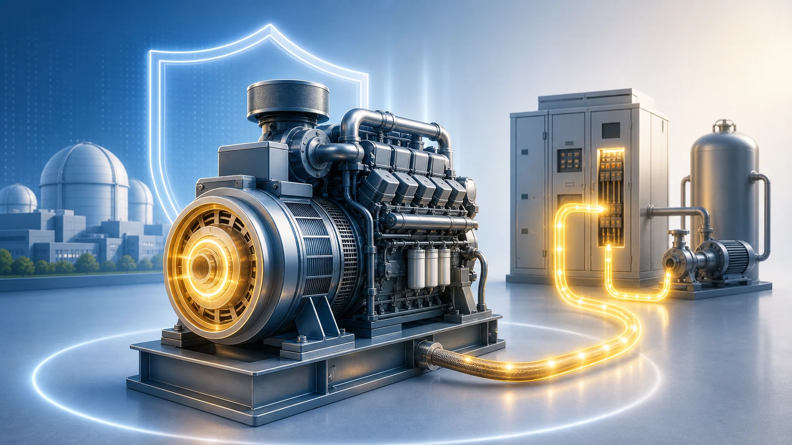
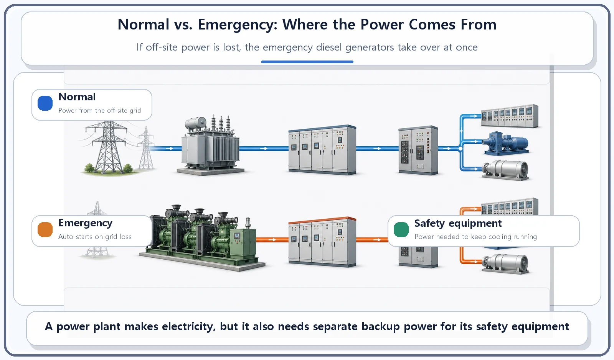
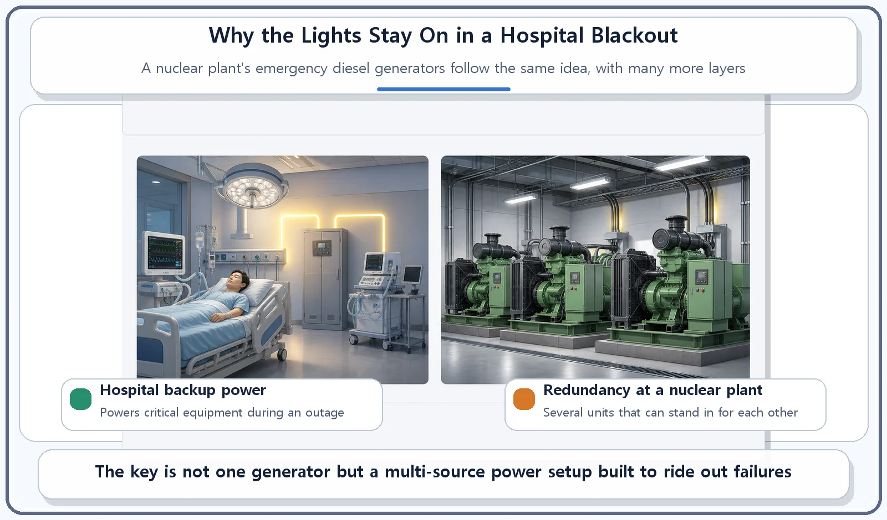

Reactor Components · 067
Why the Lights Stay On in a Blackout — The Emergency Diesel Generator
A plant that makes electricity also needs it. When the grid is lost, redundant emergency diesel generators start automatically to keep cooling running.

A nuclear plant makes electricity, but it also needs electricity to run its own safety equipment. If the reactor is shut down and the external grid is lost as well, emergency diesel generators start automatically and power the equipment that keeps the reactor cooled. Plants keep several of them, so that if one has a problem, another can supply the power.
Why doesn't a hospital go dark when the power fails?
You may have heard that in a large hospital, ventilators and intensive-care equipment keep running even during a blackout. Somewhere in the building there is an emergency generator. The moment power from outside is cut, it starts making its own electricity and feeds it to the critical equipment.
Most of the time we think of a nuclear power plant the other way around: the reactor makes heat, the heat makes steam, and the steam turns a turbine that sends electricity out to the grid. But there are moments when a nuclear plant needs to receive electricity rather than make it. Today's topic is the equipment that prepares the plant for exactly that situation: the emergency diesel generator.
Even a power plant needs power
A nuclear power plant produces electricity, but it also consumes it. Running the plant itself takes power: for the reactor coolant pumps, for the instrumentation and control systems that monitor and run the plant, for lighting, and much more. In normal operation, the plant runs this equipment on a mix of some of the electricity it generates itself and power arriving from the external transmission grid. In other words, the plant is both a producer and a customer of electricity.
Now imagine the reactor is shut down, or the external grid has a problem and can no longer deliver power. Equipment that matters for safety, such as the coolant pumps, still has to keep working, and that takes electricity. If the reactor is not producing electricity itself, that power has to come from somewhere else.

The emergency diesel generator: the backstop power source
An emergency diesel generator is a standby generating unit whose job is to supply, on its own, the electricity that the reactor's safety-related equipment needs (above all, its cooling functions) when the external power supply is lost.
Most of the time it simply waits on standby. When the loss of external power is detected, it is designed to start automatically and begin supplying power within a short time.
The idea is the same as a hospital's emergency generator powering critical equipment during a blackout. There is one important difference, though: a nuclear plant does not rely on a single backup generator. It normally has several emergency diesel generators, arranged with redundancy (deliberate duplication), so that if one has a problem, another can supply the power instead. It is a bit like heading out on a long road trip with not one spare tire but several: the point is not the spare itself, but never being left with none.

Where people get mixed up
"A nuclear plant makes electricity, so it can't have a blackout." Not so. When the reactor is shut down, it is not generating any electricity of its own, and it has to draw power from the external grid. The emergency diesel generators, and other backup power sources like them, exist for the case where even that external grid connection is lost, a situation known as a loss of off-site power.
A nuclear plant's emergency diesel generator works like a home backup generator, but it is held to a very different standard. The basic principle is the same: during an outage, a diesel engine drives a generator to make electricity. But a nuclear plant's emergency diesel generators are designed and maintained to much stricter requirements, including automatic starting, redundancy across several units, and regular performance testing.
| Feature | Nuclear plant emergency diesel generator |
|---|---|
| Basic principle | Same as a home or hospital backup generator: a diesel engine makes electricity during an outage |
| Starting | Designed to start automatically within a short time after loss of external power is detected |
| Number of units | Several, arranged with redundancy so one can stand in for another |
| Upkeep | Designed and maintained to much stricter standards, including regular performance testing |
The short version
- A nuclear power plant also has moments when it must receive electricity to run its safety equipment.
- An emergency diesel generator is a standby generating unit that powers safety equipment, especially cooling, when external power is lost.
- Like a hospital's emergency generator it starts automatically, but a nuclear plant uses several units with redundancy to make the supply more reliable.
- Even a plant that makes electricity keeps its own backup power sources ready for a blackout.
So the story of a nuclear plant's electricity runs in both directions: it sends power out to the grid, and it keeps its own carefully layered backup ready for the day the grid cannot send power back.